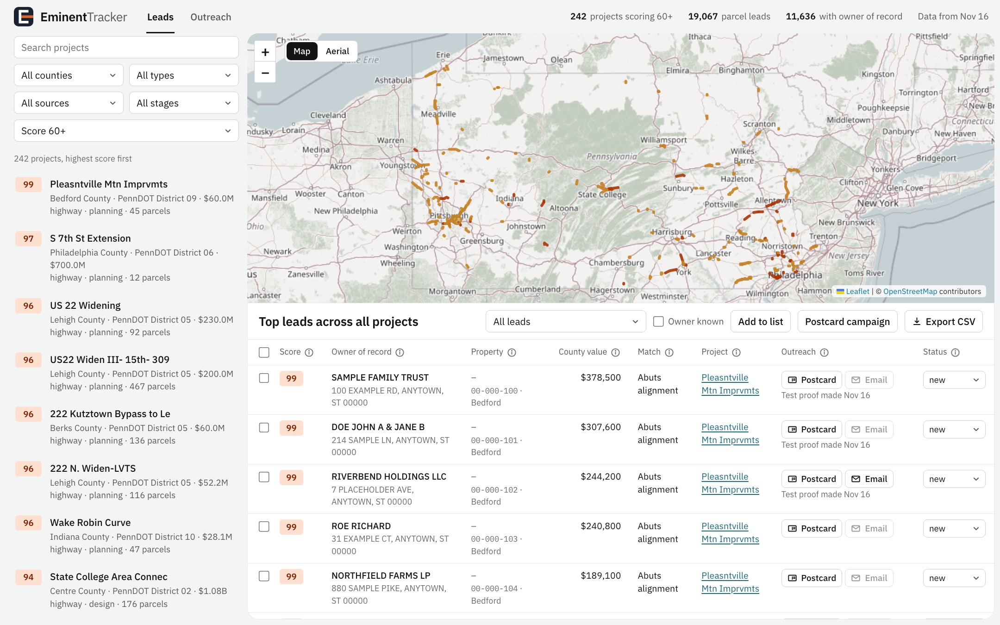

Built by eminent domain attorneys, for eminent domain attorneys.
Request accessCreate account See the live Pennsylvania dataFind the landbefore the notice.
EminentTracker reads public project plans every day, finds each parcel in the path, and gives you the owner of record years before a condemnation notice is filed.

{{leads}}parcel leads on file in Pennsylvania as of {{date}}, matched to {{projects}} planned projects
What it does for your practice
Find clients years earlier.
See which owners a road, bridge or pipeline will reach while the project is still on a planning list, long before any notice goes out.
Know exactly who to call.
Every affected parcel comes with its owner of record, mailing address, boundary and assessed value, ranked by how likely a taking is.
Reach them before anyone else.
Send postcards and email in your firm's name with one click, marked as attorney advertising.
One plan, everything included
Every lead, owner record and outreach tool, for your whole firm. Postcards and skip tracing are billed as you use them.
William Christopher Duerr
Owner, EminentTracker
Duerr Law, PC · Fort Washington, Pennsylvania
Built by eminent domain attorneys
We built EminentTracker for our own practice, to learn who is about to lose land before the condemnation is filed.
Planning lists name projects years ahead, but nobody has time to read them and trace every route to a deed. The software does that reading every day. It covers Pennsylvania now, and other states are being added.
Be there before the notice.
Access is opening firm by firm. Tell us where you practice and we will set your firm up.Create your firm's account with your work email or with Google. It takes a minute.
Request accessCreate account